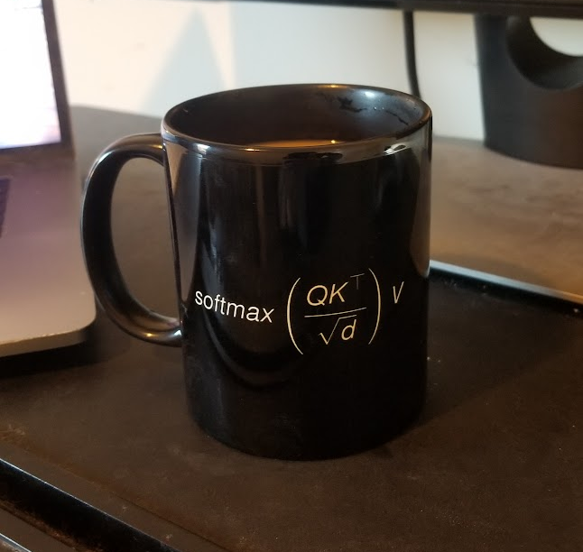

I am no longer available until June 2025 at the earliest.
I am thinking of offering $10,000 USD to the first individual or team that can train and open source a model or system that produces working implementations from AI papers. It will be evaluated by a random sampling of AI/ML PhD students around the world, by how much value they find in said system. If you are an organization interested in chipping into the pool, or have ideas about how to better scope the challenge, please reach out
Below is my contact for Signal if you wish to chat, about an AI paper, or otherwise